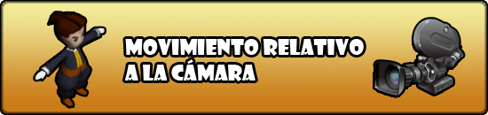
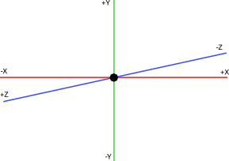

Dec 30, 2010 · 4 minute read · Comments
Games development

Como todo buen hijo de vecino, Sion Tower necesitará reproducir efectos de sonido y música de fondo, de otro modo al jugador se le caerían dos lagrimones y lo cerraría para siempre. Ogre es un motor de renderizado y no incorpora elementos como un subsistema de audio, por tanto, debía buscarlo en otro lugar. Como he comentado anteriormente, Ogre cuenta con un sistema de gestión de recursos muy potente y ampliable. Sobra decir que mi audio debería integrarse completamente con dicho sistema. A continuación, relato mi pequeña odisea para conseguir lo deseado.
Elegir una biblioteca de audio
Debía elegir una biblioteca para gestionar el audio, al menos a bajo nivel. Las opciones más evidentes eran SDL Mixer y OpenAL. Indagando un poco, encontré una biblioteca auxiliar llamada OgreOggSound que integraba OpenAL con Ogre incorporando audio 3D. Los ojos se me abrieron como platos pero me llevé una decepción cuando vi que la documentación brillaba por su ausencia. Además, prefería aprender la forma de extender la gestión de recursos de Ogre y cacharrear un poco con el audio.
OpenAL es al sonido lo que OpenGL al 3D en el ámbito open source. Es compatible con decenas de plataformas y está enfocada al desarrollo de videojuegos en 3D. Títulos triple A como Doom 3, Battlefield 2 o Jedi Knight lo han utilizado. Como era de esperar, es un sistema muy grande y complejo.
SDL Mixer es una biblioteca pequeña y sencilla que me permite regular aspectos como volumen y ángulo para provocar un efecto pseudo 3D. Ya había trabajado con ella en Air Force Pilot y en Granny’s Bloodbath de forma satisfactoria. Además, es compatible con las plataformas que necesito. En fin, es más limitada pero me basta para mis necesidades.
Integración con la gestión de recursos de Ogre
Los recursos que queramos integrar con Ogre deben implementar la interfaz Resource. Ogre utiliza el ResourceGroupManager para gestionar los recursos a nivel global pero tiene un ResourceManager para cada tipo de recurso. Esto quiere decir que tenemos que implementar clases que hereden de ResourceManager. Los gestores de recursos no manejan objetos Resource directamente, sino que utilizan punteros inteligentes, SharedPtr muy similares a los shared_ptr de Boost. Esto les permite mantener una sola instancia de cada recurso compartida por varias entidades.
SDL Mixer trata de forma distinta la música y los efectos de sonido por lo que planteé dos nuevos recursos: Musica y Sonido. A continuación tenéis la lista de clases resultante aunque al final de este artículo se expone un diagrama UML completo.
- SoundFX y SoundFXPtr
- Song y SongPtr
- SoundFXManager
- SongManager
La forma de trabajar con los nuevos recursos es semejante al estilo de Ogre. Queda completamente integrado:
// Al arrancar la aplicación
SoundFXManager* soundFXManager = new SoundFXManager();
// Durante la carga de algún estado
// Se le indica el nombre del recurso, ResourceGroupManager
// te proporciona la ruta completa.
SoundFXPtr sound = SoundFXManager::getSingleton().load("disparo.wav");
// Durante el game loop
sound->play();
// Al cerrar la aplicación
delete soundFXManager;
Sencillo pero resultón sonido 3D
No todos los sonidos tienen porqué reproducirse con efecto 3D por lo que he modelado este pequeño sistema de forma independiente. La clase Sound3D tiene un SoundFXPtr y dos punteros a SceneNode. Uno de los nodos es el emisor y el otro el que escucha. El volumen varía en función de la distancia entre ambos nodos mientras que el ángulo entre ambos elementos produce un efecto estéreo. El siguiente diagrama lo ilustra:

SDL Mixer distribuye los efectos de sonido en los canales que se hayan reservado a tal efecto. Un mismo Sound3D puede estar reproduciéndose en canales distintos al mismo tiempo. La clase Sound3D controla internamente qué sonido tiene asociado cada canal. Se pone a disposición del desarrollador un método estático para actualizar todos los sonidos 3D en reproducción. Preferiblemente una vez por cada iteración del game loop deberíamos hacer:
// Actualizar todos los sonidos 3D en reproducción
Sound3D::update3DSound();
A vista de pájaro
El siguiente diagrama de clases simplificado ilustra a grandes rasgos los elementos de este sistema de audio y sus relaciones.

Para terminar
¡Vaya, me he extendido más de la cuenta! Han sido dos días intensos de trabajo entre aprender a extender la gestión de recursos de Ogre e implementación. En principio he desarrollado este sistema de sonido para Sion Tower pero en realidad es completamente independiente. Si estás desarrollando un juego y te interesa, acude a la forja y utiliza lo que desees (es GPL).
Seguiré informando de mis avances, muchas gracias por leer.
Dec 29, 2010 · 3 minute read · Comments
Hobbies

Últimamente me he aventurado a comenzar series como The Walking Dead, Community o la que nos ocupa en estos momentos, Boardwalk Empire. He de reconocer que la apertura de miras ha venido bien pues no me he sentido demasiado decepcionado en ningún caso. ¿Quién sabe? Puede que sea un conformista. Como varias de las series de la HBO, estamos ante una obra de monóculo. La mano de Martin Scorsese se nota aunque sólo se haya visto involucrado de pleno en el episodio piloto. En cualquier caso, Terrence Winter ha hecho un estupendo trabajo. En las siguientes líneas ofrezco mi opinión, libre de criterio o sentido alguno.

Crimen durante la Ley Seca
Boardwalk Empire está ambientada en la Atlantic City de los años 20, época de la “Ley Seca”. Se nos presenta un mundo de antiguas costumbres corrupto hasta la médula. Un favor por aquí, un fajo de billetes por allá, ahora un ajustes de cuentas y luego unas partidas en el casino. Ya saben, las cosas que hacen los mafiosos para poner un plato sobre la mesa. Por encima destaca el político Enoch Thompson, alias Nucky encarnado por un espectacular Steve Buscemi. Básicamente nos cuenta la historia de los trapicheos y los conflictos de poder entre gremios del crimen organizado. Por supuesto, aderezado con una buena ración de burdeles a cascoporro.

Cabarets, fiestas y políticos
No se puede decir que sea una serie de acción en la que la tensión se mantenga en lo más alto durante cada minuto. Muchos le achacan que es demasiado lenta y podrían tener razón. No obstante, la ambientación y las interpretaciones absorben casi toda la responsabilidad. ¡Ojo! Sin que se les arrugue la camisa para la fiesta en el cabaret, oiga.
El mundo del alcohol, el politiqueo, la dialéctica y las apariencias aparece reflejado constantemente. Decir “lo siento cariño, esta noche llegaré tarde porque tengo asuntos de negocios” para acabar en un burdel mientras se cierra el acuerdo es el procedimiento habitual. Boardwalk Empire hace caso omiso de los tabús sin llegar a blandir lo explícito como arma. Se abre ante el espectador un mundo de matices que cobra vida y se llena de luces de neón durante la noche. Queda patente que nadie tiene una integridad inquebrantable.
De la mano de Steve Buscemi y la mayoría del reparto presenciaremos un magnífico despliegue de interpretaciones. Actuaciones creíbles que crean una atmósfera densa, de una tensión palpable. Sin duda, merece la pena.

Damas y caballeros, aún hay más
Como muchos sabréis, HBO ha confirmado una segunda temporada de Boardwalk Empire ante su buena acogida. La serie fue nominada a un Globo de Oro por mejor serie dramática entre otros galardones. ¿Me he quedado con ganas de más? Sin duda, aunque necesito digerirla un poco antes de una nueva temporada, me vendrá bien el descanso. Si estáis dispuestos a sentaros pacientemente y disfrutar de un buen guión, adelante, es una producción con “qualité”.
Dec 26, 2010 · 5 minute read · Comments
Games development

En la mayoría de videojuegos en tercera persona, la dirección hacia la que se mueve el personaje depende de la orientación de la cámara. A pesar de que Sion Tower es un tower defense, controlamos a un personaje en tercera persona y, por tanto, debía incorporar este sistema. Estos días he estado exprimiendo los sesos para implementar dicho movimiento. ¡Por fin! Tras decenas de diagramas con vectores, ángulos y sistemas de coordenadas, lo he conseguido. En este artículo explico un sencillo algoritmo para conseguirlo.
¿Qué queremos conseguir?
El siguiente diagrama muestra el sistema de coordenadas de Ogre. Imaginad que nuestro personaje se encuentra en el origen p = (0, 0, 0) y que la cámara está en el c = (0, 0, 50) mirando hacia el origen. Nuestras teclas de movimiento son las clásicas: WASD. Al pulsar W el personaje debe moverse en la dirección negativa del eje Z, en cambio, si pulsamos D deberá hacerlo en la dirección positiva del eje X.
En cambio, si la cámara se situase en c = (50, 0, 0) mirando a (0, 0, 0) las teclas no tendrían el mismo efecto en términos absolutos, aunque se mantiene idéntico si tomamos como punto de referencia a la cámara. Si pulsamos W el personaje se desplazará en la dirección negativa del eje X. En el caso de que pulsemos D, el personaje se dirigirá en la dirección negativa del eje Z.

Por supuesto, el personaje deberá girarse para mirar hacia la dirección del desplazamiento. A continuación, detallamos la manera de implementar este sistema de movimiento.
Algoritmo: objetos implicados
Este pequeño algoritmo está orientado al motor de renderizado Ogre3D y la biblioteca de dispositivos de entrada OIS aunque su filosofía es válida para otras herramientas. Lo ideal sería utilizar clases para el personaje y otros elementos aunque, en esta ocasión, he preferido no hacerlo en favor de la simplicidad del ejemplo.
Partimos de los siguientes objetos:
Ogre::SceneNode* nodoPersonaje; // Nodo que representa al personaje
Ogre::Vector3 direccionObjetivo; // Relativa a la cámara
Ogre::Vector3 direccionActual; // Relativa a la cámara
Ogre::Vector3 velocidad; // Velocidad del personaje
bool andando; // true si el personaje se está desplazando
OIS::Keyboard* teclado; // Teclado para controlar al personaje
Algoritmo: desplazamiento del personaje
En cada frame debemos tomar la dirección de la cámara y quedarnos con su componente x y z ya que nos movemos en el plano. Esa será nuestra dirección “hacia delante”. Es muy sencillo obtener la dirección “hacia la derecha”, simplemente intercambiamos las componentes x y z cambiándole el signo a la z de “hacia delante”.
La dirección objetivo de este frame se puede calcular consultando las pulsaciones de las teclas y combinando los dos vectores anteriores utilizando sumas o restas. Nos podremos mover en 8 direcciones distintas. Por ejemplo, si deseamos dirigirnos hacia atrás a la izquierda tendremos: direccionObjetivo = -delante – derecha. Finalmente, la dirección objetivo debe ser normalizada, es decir, que el módulo del vector sea igual a 1. Esto es muy importante si no queremos que la velocidad del personaje se vea alterada. Finalmente, aplicamos el desplazamiento teniendo en cuenta la velocidad, la dirección y el tiempo en milisegundos desde el último frame. Esta técnica se conoce como LERP (Linear Interpolation).
Algoritmo: orientación del personaje
Sólo nos queda corregir la orientación del personaje para que mire hacia la dirección en la que se desplaza. Ogre pone a nuestra disposición el método Vector3::getRotationTo que, dado un vector nos devuelve el cuaternio a aplicar de forma que tras la rotación quede alineado con el segundo. Los cuaternios se utilizan para representar rotaciones en el espacio y están compuestos por un ángulo y un eje (en este caso el y). Si multiplicamos la rotación necesaria por la que ya posee el nodo del personaje, éste mirará hacia donde deseamos. Es importante el orden de los operadores ya que el producto de cuaternios no es conmutativo.
Algoritmo: código completo
He aquí el código completo:
using namespace Ogre;
void EstadoJuego::actualizarPersonaje(Ogre::Real deltaT) {
// Tomamos la dirección de la cámara
Vector3 delante = camara->getDirection();
delante.y = 0;
// Vector relativo a la cámara, ortogonal hacia su derecha
Vector3 derecha(-delante.z, 0, delante.x);
// Calculamos la dirección objetivo en función de la pulsación de las
// teclas.
if (teclado->isKeyDown(OIS::KC_W) && teclado->isKeyDown(OIS::KC_D)) {
direccionObjetivo = delante + derecha;
andando = true;
}
else if (teclado->isKeyDown(OIS::KC_W) && teclado->isKeyDown(OIS::KC_A)) {
direccionObjetivo = delante - derecha;
andando = true;
}
else if (teclado->isKeyDown(OIS::KC_S) && teclado->isKeyDown(OIS::KC_D)) {
direccionObjetivo = -delante + derecha;
andando = true;
}
else if (teclado->isKeyDown(OIS::KC_S) && teclado->isKeyDown(OIS::KC_A)) {
direccionObjetivo = -delante - derecha;
andando = true;
}
else if (teclado->isKeyDown(OIS::KC_W)) {
direccionObjetivo = delante;
andando = true;
}
else if (teclado->isKeyDown(OIS::KC_S)) {
direccionObjetivo = -delante;
andando = true;
}
else if (teclado->isKeyDown(OIS::KC_D)) {
direccionObjetivo = derecha;
andando = true;
}
else if (teclado->isKeyDown(OIS::KC_A)){
direccionObjetivo = -derecha;
andando = true;
}
else
andando = false;
// Normalizamos el vector direccion
direccionObjetivo.normalise();
// Si debemos desplazarnos, aplicamos la traslación y calculamos la
// rotación a aplicar
if (andando) {
nodoPersonaje->translate(velocidad * direccionObjetivo * deltaT,
Node::TS_WORLD);
if (direccionObjetivo != direccionActual) {
Quaternion rotacion = direccionActual.getRotationTo(direccionObjetivo,
Vector3(0, 1, 0));
Quaternion rotacionActual = nodoPersonaje->getOrientation()
nodoPersonaje->setOrientation(orientacion * rotacionActual);
direccionActual = direccionObjetivo;
}
}
}
Posibles mejoras
Este algoritmo no está pensado para incluirse en un juego completo puesto que debe ser refinado. Sólo tenemos en cuenta la animación externa del personaje (desplazamiento y orientación). El algoritmo se olvida completamente de la animación interna. Si quieres un mejor resultado deberías incluirla (andar, detenerse, etc).
La rotación es brusca, lo ideal sería aplicarla poco a poco de forma que el personaje se girase suavemente. Para hacerlo deberíamos dividir la rotación en partes y aplicar una en cada frame.
Referencias
Seguramente quieras consultar fuentes mucho más fiables que yo:
- Game Engine Architecture (Jason Gregory): libro que cubre todos los aspectos a la hora de desarrollar un motor de juego. Contiene una sección de matemáticas muy bien explicada.
- LERP (Wikipedia)
- Quaternios (Confuted): si esto de los cuaternios te ha sonado a chino te recomiendo que consultes este artículo en el que se hace una pequeña introducción.
- Documentación oficial de Ogre: para obtener más detalles sobre las clases y los métodos empleados.
Dec 18, 2010 · 2 minute read · Comments
Hobbies

The Humble Indie Bundle regresó hace unos días con su segunda entrega. Un pack de 5 juegos independientes que podemos adquirir al precio que fijemos. Vienen libre de protección DRM, compatibles con Windows/Linux/Mac. Es una iniciativa solidaria, pues podremos elegir la distribución de nuestro pago entre desarrolladores y ONGs. ¿No lo tienes aún? ¡Ve a comprarlo pedazo de insensato!
Pasemos pues, a comentar los ilustres participantes:
- Braid: el más conocido de los presentes que cosechó un tremendo éxito tanto en X-Box 360 Live Arcade como en PC. Un juego de plataformas en 2D que juega con el tiempo y los puzzles. Destaca su bellísimo apartado artístico con animaciones suaves, efectos de luz cuidados y fondos que parecen acuarelas.
- Cortex Command: encarnamos a un cerebro que controla remotamente a varios robots. Nuestra misión es recolectar la mayor cantidad de oro posible y derrotar a los demás jugadores. Mezcla la simulación física, con la estrategia, la acción y un planteamiento muy original.
- Machinarium: lo jugué hace cierto tiempo y publiqué aquí mis humildes impresiones. Una aventura gráfica como las que ya no se hacen. Un juego que no necesita palabras para transmitir los sentimientos de un pequeño robot que busca a su novia secuestrada. Tus sesos saltarán por los aires con los puzzles.
- Osmos: un juego pausado y relajante que mezcla música y habilidad. Controlamos a una especie de célula que debe crecer absorbiendo a otras más pequeñas mientras evita ser absorbida por las más grandes.
- Revenge of the Titans: juego tower defense ambientado en una invasión alien. Una jugabilidad muy sencilla pero interesante, acompañado de cierto humor y un apartado gráfico original. Desgraciadamente, es al que menos tiempo he podido dedicarle.
Creo que es una magnífica oportunidad por varias razones. En primer lugar, apoyaremos a la Electronic Frontier Foundation y a Child’s Play Charity. Prestaremos nuestra mano a desarrolladores que trabajan muy duro en una industria de competitividad feroz. ¡Por fin nos quitaremos la carga de conseguir un regalo para el enésimo amigo invisible de la temporada! Por último, estaremos comprando momentos de ocio de calidad de la buena.
Les dejo que voy a jugar… ¡quiero decir, a trabajar! Quizás dentro de algún tiempo le dedique un artículo completo a una de las 4 joyas restantes.
Dec 17, 2010 · 1 minute read · Comments
Games development

Durante todo el día de mañana viernes 17 y el próximo lunes 20 de diciembre se celebrará el I Hackathon en la Universidad de Cádiz de la mano de la Oficina de Software Libre. Como no podía ser de otra forma, el proyecto IberOgre y Sion Tower estará presente tanto como para buscar colaboradores como para ofrecer mano de obra barata (básicamente gratis).
Pero… ¿qué narices es un hackathon? Pues es una especie de maratón de desarrollo en el que los participantes presentan sus proyectos junto con una lista de pequeñas tareas pendientes. Durante el transcurso del evento los participantes abordan las tareas por lo que se abre una gran oportunidad para trabajar en otros proyectos (comenzados o completamente nuevos). También entran en juego los hackamuses, pequeñas charlas informales al más puro estilo BarCamp. Podéis encontrar más información en la noticia de la página oficial de la OSLUCA.
Es una grandiosa oportunidad para abandonar el individualismo por una colaboración activa. Al fin y al cabo será una convivencia en el que se intercambien experiencias y se actúe en equipo. IberOgre y Sion Tower no podían faltar al evento así que mañana estaremos por allí y trabajaremos duro durante todo el fin de semana. Por último, dejo el cartel completo.